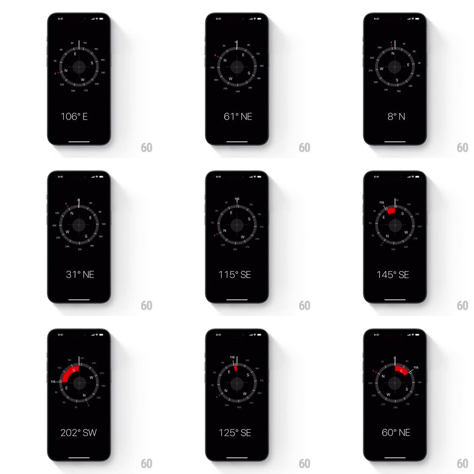

Media
Frame-by-frame

Rebuild this animation 1:1: Apple's Compass - a black screen where the degree dial spins live with the gyroscope, cardinal letters sweep past the top marker, the big bearing readout updates, and locking a target bearing reveals a red deviation arc between target and current heading.

Rebuild this animation 1:1: Apple's Compass - a black screen where the degree dial spins live with the gyroscope, cardinal letters sweep past the top marker, the big bearing readout updates, and locking a target bearing reveals a red deviation arc between target and current heading.
## Integration
Integration: stack-agnostic spec - springs given as stiffness/damping, timed motions as duration + curve; map every value to your framework and animation library of choice.
## Scene
Black screen: circular compass dial (degree ticks 0-360, cardinal letters N/E/S/W, small red accent ticks), thin white marker line at 12 o'clock, large bearing readout below ("112° SE"). Locked state: a red arc wedge fills the gap between the locked bearing and current heading.
## Motion spec
Pattern: live gyroscope dial with locked-bearing deviation.
- Dial rotation tracks device rotation 1:1 with light smoothing (~80ms lag) - ticks and letters sweep under the fixed top marker; the readout updates continuously with cardinal suffix flipping at exact boundaries.
- Fast spins keep motion legible: dial velocity is damped slightly (no jitter) but never lags visibly.
- Tap to lock a bearing: a thin white reference line lands at the current bearing with a haptic tick; rotating away draws a red arc from the locked line to the current marker (the wedge sweeps in real time, red filling 200ms after deviation begins).
- Rotating back onto the target: the red arc collapses (150ms) and a single haptic fires on exact alignment.
- Tap again clears the lock (line fades 200ms).
## Calibration
- The readout always shows CURRENT heading; the red arc always shows deviation FROM the lock - never swap them.
- Arc renders on the dial's outer band, inside the tick ring.
## Reduced motion
Dial rotation is direct sensor data - no animation to remove; arc appears without sweep.
## Don't miss
- Red is used ONLY for deviation; everything else is white/gray on black.
- Cardinal letters scale subtly (1.15x) as they pass the top marker.